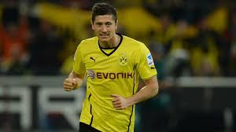

Po zakończeniu sezonu 2009/2010 trwały negocjacje w sprawie transferu Lewandowskiego. Ostatecznie 11 czerwca 2010 Lech Poznań osiągnął porozumienie z niemieckim klubem, Borussia Dortmund, uzgadniając warunki transakcji na kwotę 4,5 mln euro. Piłkarz podpisał kontrakt obowiązujący do 30 czerwca 2014. 22 sierpnia 2010 Lewandowski zadebiutował w Bundeslidze w meczu z Bayerem 04 Leverkusen (0:2), zmieniając w 63. minucie kapitana drużyny, Sebastiana Kehla. Niespełna miesiąc później, 19 września, zdobył swojego pierwszego ligowego gola – w wygranych 3:1 Derbach Zagłębia Ruhry z FC Schalke 04. W pierwszym sezonie (2010/2011), w którym występował głównie na pozycji cofniętego napastnika, zdobył z BVB mistrzostwo Niemiec; zagrał w 33 meczach, w których strzelił 8 goli i zaliczył 3 asysty.
13 września 2011 zadebiutował w Lidze Mistrzów UEFA, w zakończonym remisem (1:1) meczu przeciwko Arsenalowi – spędził na boisku pełne 90 minut. 1 października strzelił dla Borussii swojego pierwszego hat-tricka, w wygranym 4:0 ligowym spotkaniu przeciwko Augsburgowi. 19 października 2011 zdobył swoją premierową bramkę w Lidze Mistrzów, w przegranym 1:3 meczu z Olympiakosem. Był to wówczas pierwszy gol polskiego piłkarza w fazie grupowej Ligi Mistrzów po prawie dwuletniej przerwie (od grudnia 2009). W meczu 17. kolejki ligi niemieckiej zdobył dwa gole przeciwko Freiburgowi i tym samym całą rundę jesienną Bundesligi zakończył z 12 trafieniami i 6 asystami na koncie. 5 maja 2012 powtórzył ten wyczyn w spotkaniu z Freiburgiem, ostatnim meczu sezonu. Ostatecznie polski napastnik ukończył rozgrywki z dorobkiem 22 bramek (w rundzie wiosennej uzbierał 10 trafień). Tym samym zajął 3. miejsce wśród najlepszych strzelców ligi w ówczesnym sezonie. Jednocześnie pobił rekord goli strzelonych przez Polaka w Bundeslidze, należący wówczas do Jana Furtoka (20). Lewandowski został również najlepszym strzelcem Borussii Dortmund w ligowych rozgrywkach. Ponadto władze ligi uznały Polaka za najlepszego piłkarza minionego roku, a dziennik „Bild” umieścił go w gronie jedenastu najlepszych piłkarzy sezonu. Lewandowski drugi raz z rzędu zdobył z Borussią mistrzostwo oraz sięgnął z nią po Puchar Niemiec, strzelając w meczu finałowym (5:2) trzy bramki Bayernowi Monachium. Polak został jednocześnie królem strzelców tamtej edycji Pucharu Niemiec (siedem goli) i jednym z trzech piłkarzy w historii tych rozgrywek, którzy uzyskali hat-tricka w finale. W sezonie 2011/2012 Lewandowski zagrał w 47 meczach we wszystkich rozgrywkach, zdobywając 30 bramek.
16 marca 2013, w meczu z Freiburgiem, pobił klubowy rekord Friedhelma Konietzki, który zdobywał bramki w siedmiu kolejnych meczach Borussii w połowie lat 60. XX wieku. 13 kwietnia tego samego roku, w 29. kolejce Bundesligi (przeciwko SpVgg Greuther Fürth), Lewandowski przedłużył serię do 11 kolejnych spotkań. Dzięki temu stał się drugim graczem w historii Bundesligi pod względem liczby meczów z rzędu ze strzelonym golem – pierwsze miejsce należy do Gerda Müllera (16 spotkań). Licznik Lewandowskiego zatrzymał się na 12 meczach ligowych, w których 14 razy trafiał do siatki, a rywalami byli wówczas: TSG 1899 Hoffenheim, Werder Brema, 1. FC Nürnberg, Bayer 04 Leverkusen, Hamburger SV, Hannover 96, FC Schalke 04, SC Freiburg, VfB Stuttgart, FC Augsburg, SpVgg Greuther Fürth i 1. FSV Mainz 05. W pierwszym półfinałowym meczu Ligi Mistrzów przeciwko Realowi Madryt (4:1), rozegranym 24 kwietnia 2013 na Signal Iduna Park w Dortmundzie, Lewandowski zdobył cztery bramki. W finale rozgrywanym na Wembley Borussia przegrała z Bayernem Monachium 1:2, a Lewandowski rozegrał pełne 90 minut. Polak z 10 trafieniami na koncie był drugim najlepszym strzelcem rozgrywek, ustępując jedynie Cristiano Ronaldo, który zdobył 12 goli. W sezonie 2012/2013 został również wicekrólem strzelców Bundesligi, zdobywając 24 bramki, a klub z Dortmundu sięgnął po wicemistrzostwo kraju.
27 lipca 2013 sięgnął z zespołem po Superpuchar Niemiec, pokonując w finale 4:2 Bayern Monachium. 15 kwietnia 2014, w meczu Pucharu Niemiec z Wolfsburgiem, zdobył swoją 100. bramkę dla Borussii Dortmund, biorąc pod uwagę wszystkie rozgrywki. 3 maja, przed meczem z TSG 1899 Hoffenheim, który był ostatnim występem Lewandowskiego w barwach BVB na własnym stadionie, został oficjalnie pożegnany przez władze i kibiców klubu. Jego ostatnim spotkaniem w drużynie z Dortmundu było wyjazdowe starcie z Herthą BSC (4:0), 10 maja 2014. Polak strzelił w nim dwa gole – w tym jednego, premierowo w swojej karierze, bezpośrednio z rzutu wolnego. W całym sezonie 2013/2014 Lewandowski strzelił w lidze 20 bramek i po raz pierwszy został królem strzelców najwyższej klasy rozgrywkowej w Niemczech. W ekipie BVB występował wspólnie z dwoma innymi reprezentantami Polski – Jakubem Błaszczykowskim i Łukaszem Piszczkiem, tworząc tzw. „polskie trio z Dortmundu”. W Borussii rozegrał łącznie 187 meczów, w których strzelił 103 bramki i zanotował 43 asysty.